农业现场直接证据
“会用”不能被人口属性简化。
坦桑尼亚样本中，46.2% 的参与者对数字技术感到舒适，53.8% 需要帮助；年龄与性别并不能简单解释困难。
ACM CHI 2024，DOI 10.1145/3613904.3642099，pp. 5, 11
面向田间异常上报与远程研判的跨角色信息支持设计研究——以蕲艾等湖北道地药材种植协作为例
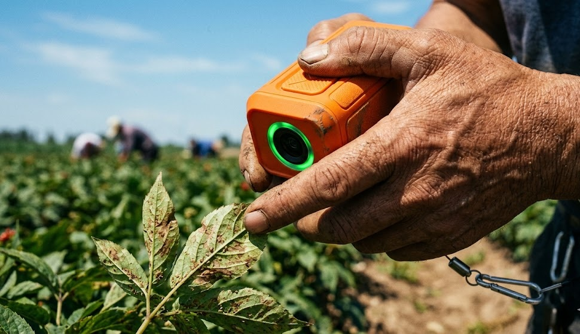
观察者感知 → 表达与结构化 → 管理者初判 → AI 后介入 → 处置与复查
农业 AI 的最后一公里为什么发生在组织协作中
现场知识为何在上报中丢失？已有证据能说明什么，仍然缺少什么
哪些机制已有证据，哪里仍断裂？DCS、实验条件、指标体系与统计方法
如何把上游记录与下游判断连起来？理论、方法与系统层面的研究贡献
贡献在哪里，风险如何控制？研究阶段、关键任务与时间安排
何时完成原型、采集与分析？研究发现、设计方法、原型与指南
最终形成什么学术与设计成果？农业 AI 的“最后一公里”，发生在组织协作中。
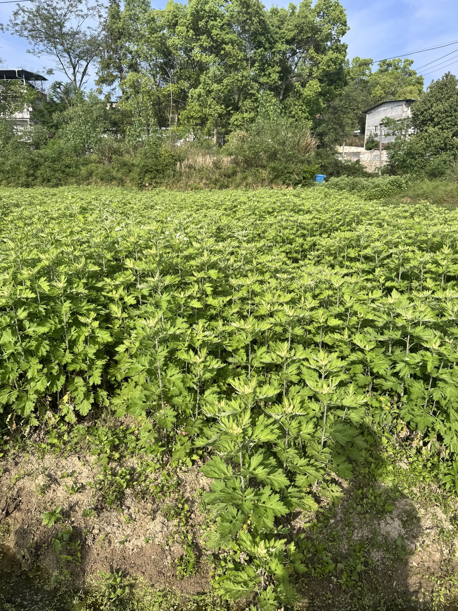
“拍到了”不等于“可以判断”。
问题不是工人没有看见，而是现场知识被压缩成一张照片和一句消息。
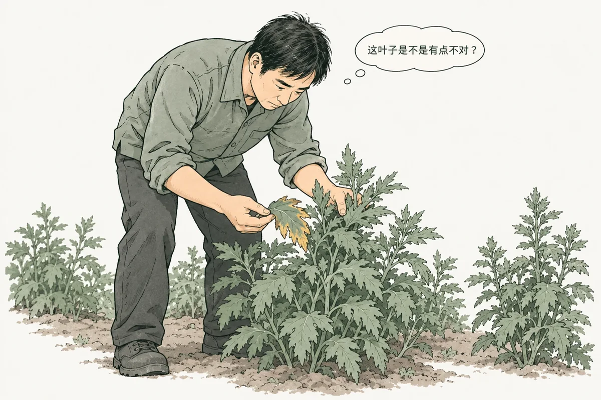
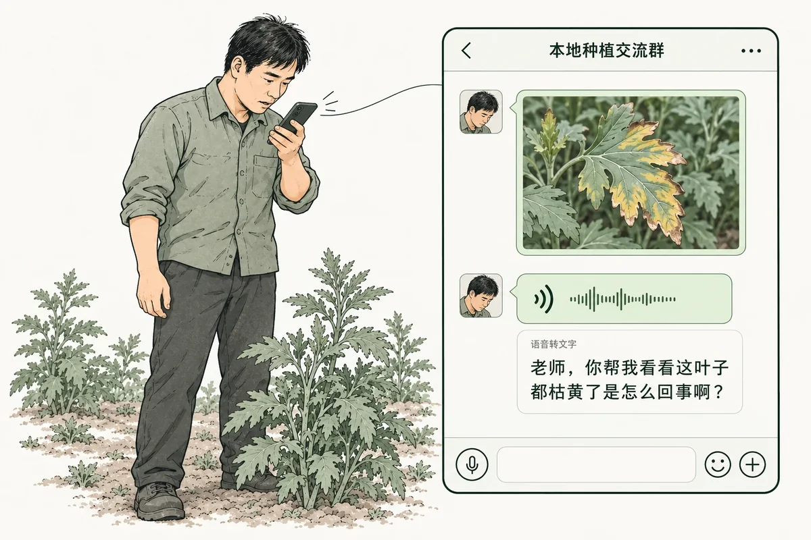
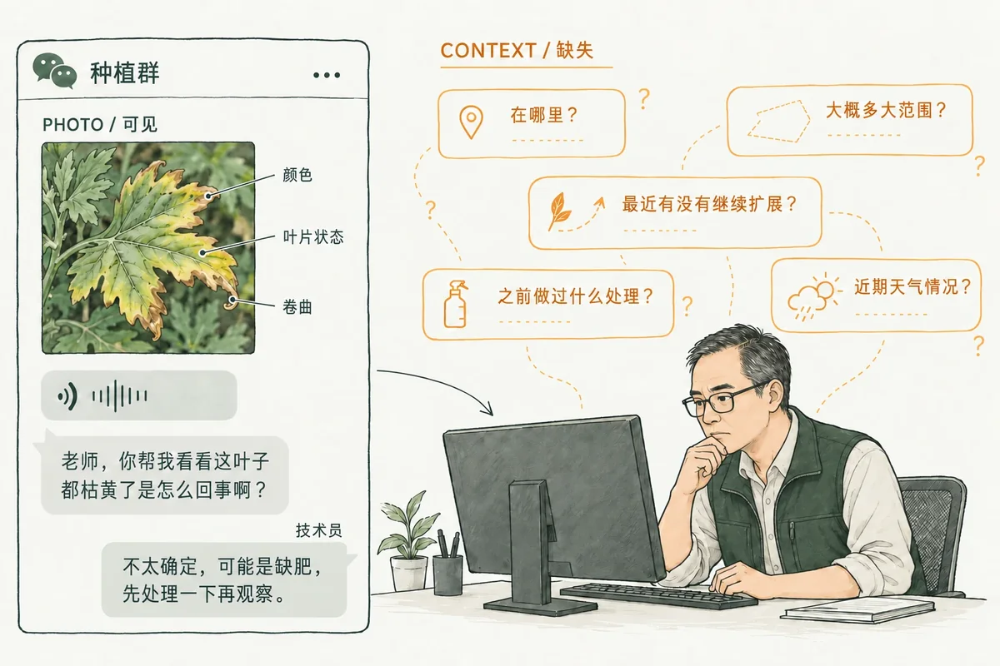
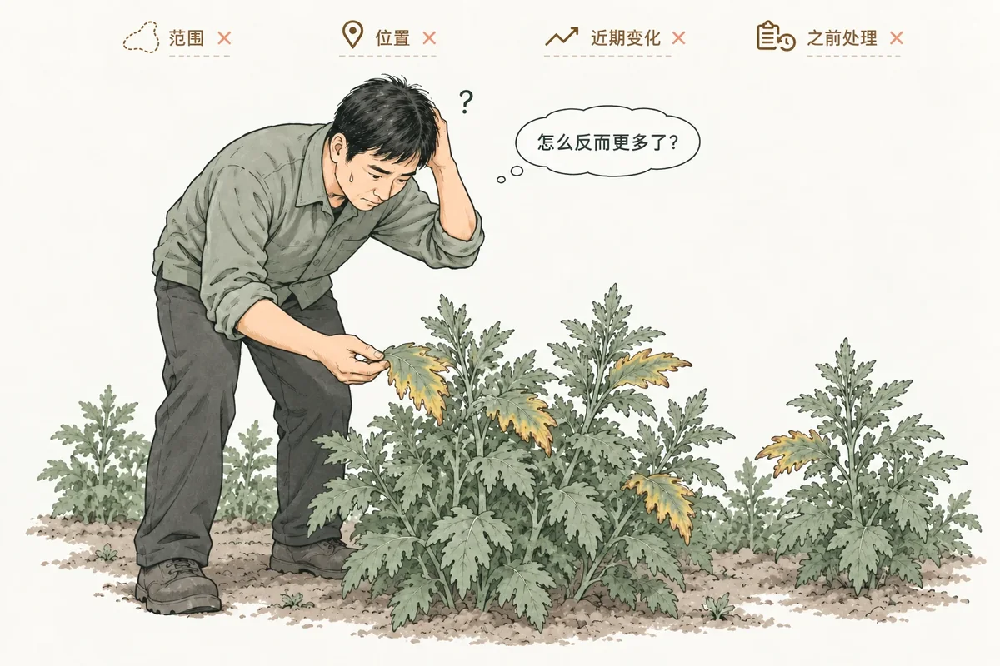
研究价值：把农业 HCI 的评价对象，从单点识别扩展到信息保真与分诊质量。
文献能支持设计机制，不能替代农业异常的直接比较。
数字技能、设备可及性与表达负担共同影响记录质量；结构化提示提高字段覆盖，也可能增加确认成本。
地块、天气、历史与比较基线有助于解释异常，但现有证据无法确定最小充分组合。
解释可能降低、无效或增加过度依赖；AI 前判与 AI 后修订的顺序必须进入实验。
责任、期限、补证与复查均有局部证据，却尚未连成同一农业异常闭环。
农业现场已有数字技能、工具—任务错配与替代性记录的直接证据；真正缺少的，是异常上报脚手架的受控比较。
坦桑尼亚样本中，46.2% 的参与者对数字技术感到舒适，53.8% 需要帮助；年龄与性别并不能简单解释困难。
结构化提示更常覆盖必需问题，但描述式提示更容易出现认可与致谢；完整性、自然度与跑题风险存在权衡。
表格需要亲友协助，地图难以表达精细空间关系，手机照片时间戳则成为替代记录。这些实践尚未证明跨角色交接已改善。
位置、天气、历史与空间比较只有在参照对象、时间窗口和来源明确时，才可能帮助远程研判。
太阳能灌溉案例中，同容量设备的每日产能偏离可帮助发现灰尘、遮阴、故障或损失；每月人工抄表本身却没有自然形成异常检测。
Farmer.Chat 整合情境知识库、位置化内容与持续反馈，但没有通过组件消融分离各类上下文的独立效果。
ASHABot 部署中，人工首次响应约 30.75 小时，形成共识约 58.59 小时。即时判断耗时和等待专家的耗时必须分开。
有时降低过度依赖，有时没有变化，有时反而增加依赖。关键变量是任务难度、呈现顺序、解释形式和 AI 正误。
一步式与 AI 一致率为 91%，两步式为 89%；但两步式中仅 70/10,560 个判断在查看 AI 后发生改变，完成时间无显著差异。
易解析高亮解释在特定困难任务中可降低过度依赖；中等难度中可能无效；另有实验发现 XAI 条件过度依赖更高。
认知强迫与引导反思可能改善适当依赖，但表现最好的条件也可能最不受偏好、信任较低且更难。
责任、期限、同伴比较、人工升级、分步执行和共享输出都有局部证据；当前资料仍未将它们连成同一农业异常的端到端验证。
农业安全学习圈会记录风险、行动、责任人、期限和完成状态；太阳能灌溉案例也显示数据与维护经验会进入社区协作。
复杂协作应允许暂停、补证、重分配与重新规划；但如果没有明确响应责任和超时机制，人工升级可能变成等待与责任漂移。
多人—AI 协作中，建议可被不同成员接受或修改；因此必须明确谁可以查看、修改、接受和关闭结果，而不是把“共享”当成权限答案。
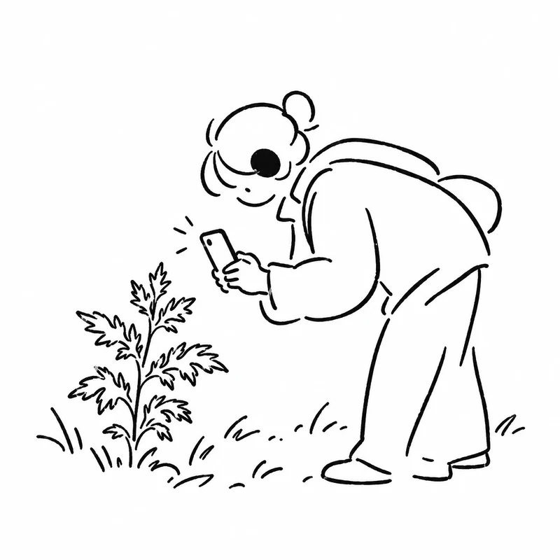
提示可能帮助表达，但也可能增加负担。
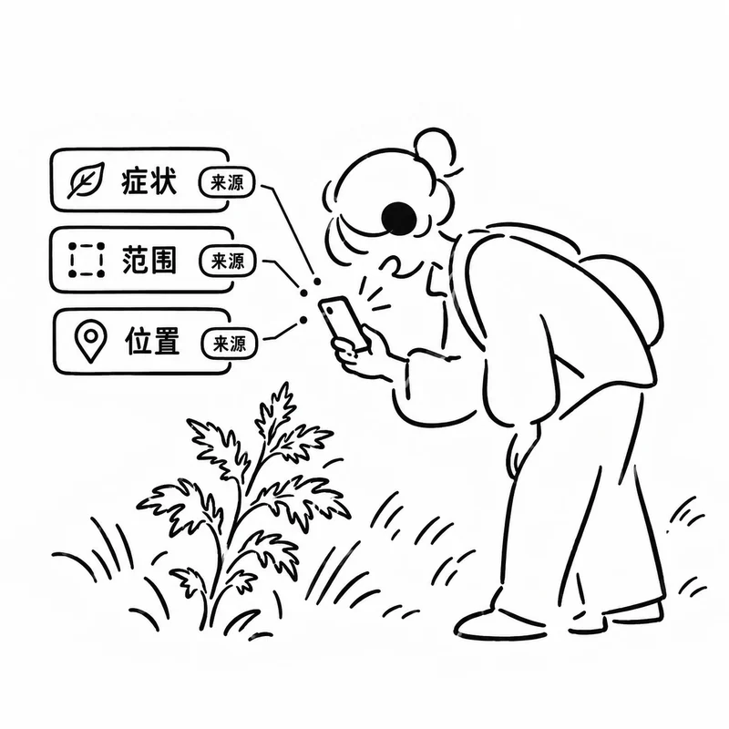
字段更完整，不代表关键诊断线索被保留下来。
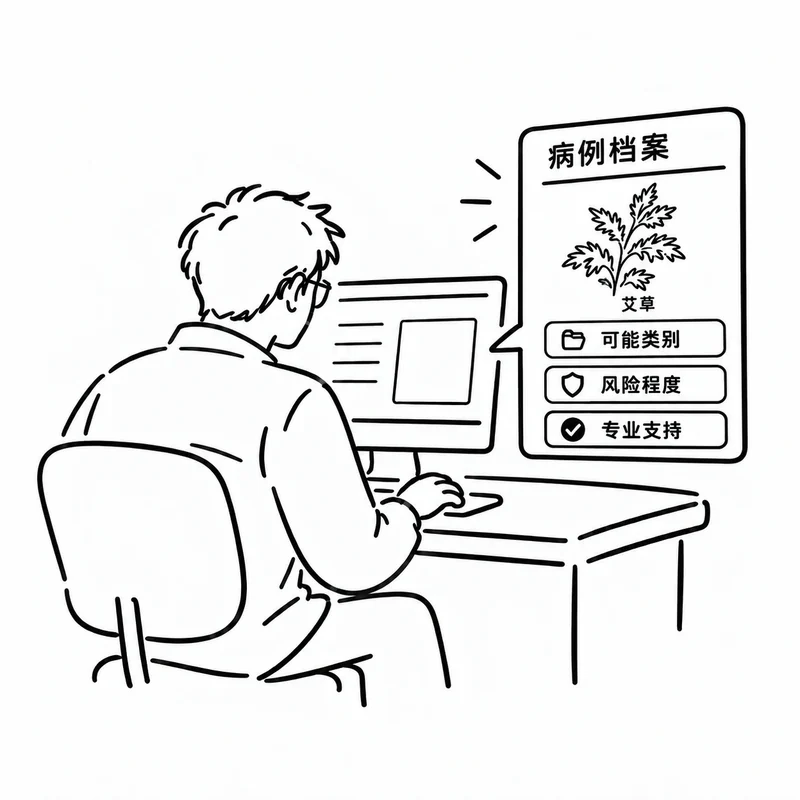
现有研究很少追踪上游信息如何影响处置与升级。
本研究要补上的，是“上报改善 → 信息保留 → 分诊改善”这条证据链。
以分布式认知支架为框架，以链式异步协同实验为验证路径。
允许“叶子不太对”这样的模糊起点，保留人的不确定性与原始证据。
通过等粒度提示补齐症状、范围、位置；只重组工人已表达的内容。
把照片、原话、字段、缺失项和来源标记封装成同一可交接对象。
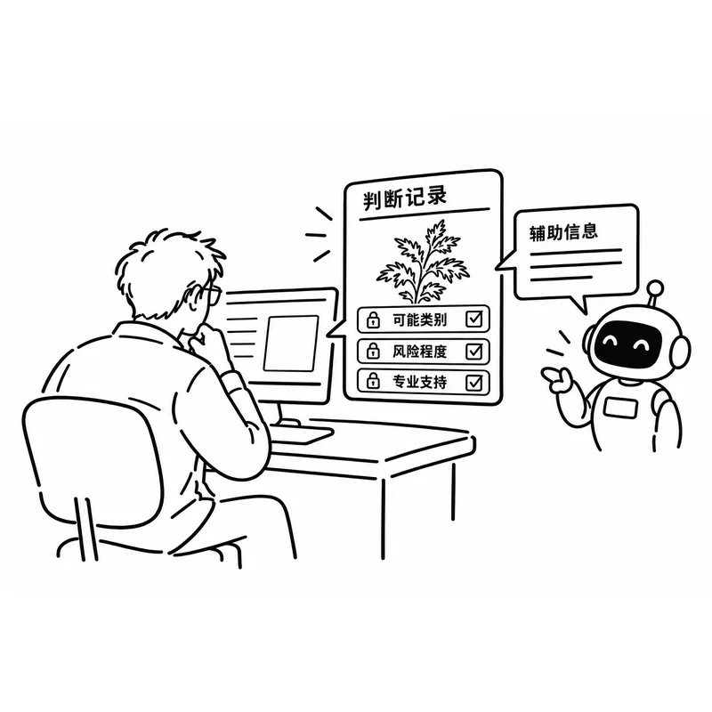
管理者先完成初步判断，再查看辅助信息，保留前后变化与判断理由。
系统帮助组织田间人员已经表达的信息，不替代观察；AI 只在管理者完成初判后提供辅助。
先判断 · 后辅助点击四个阶段体验研究逻辑。关键不是系统直接给出答案，而是保留原始观察、缺失项、初判与修订轨迹。
系统记录初步判断、信心和理由，随后再呈现辅助信息，以便比较判断前后的变化。
虫害 · 较高风险
现在寻求专业支持
可能方向：虫害，形态接近瘿蚊所致叶瘿。
保持或修改初判，并说明理由；前后判断均被保留。
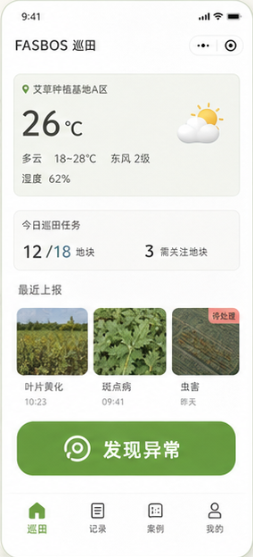
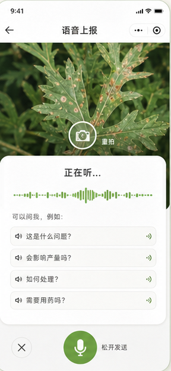
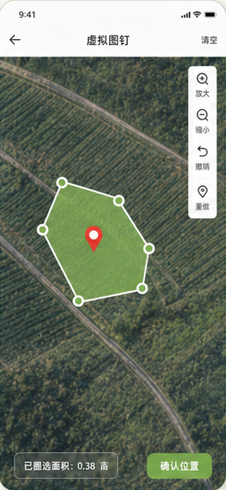
专家确认异常类型、风险程度和判断所需的关键信息
14–18 人；每人体验三种上报方式，顺序保持平衡
同一异常形成三种上报版本，供后续分诊实验使用
12–16 人，争取 ≥20；固定 PC 与眼动
处置适当性、升级合理性与机制解释
评价异常症状、影响范围、发生位置和近期变化等关键信息，在上报中被保留了多少。
由专家评价处置建议是否合适，以及是否在恰当时机寻求进一步支持。
统计哪些上报已经包含足够的症状或空间信息，可以支持管理者开展初步判断。
比较管理者查看辅助信息前后的判断变化，并分析修改理由是否合理。
分析管理者识别高风险案例的能力，同时观察是否出现不必要的升级。
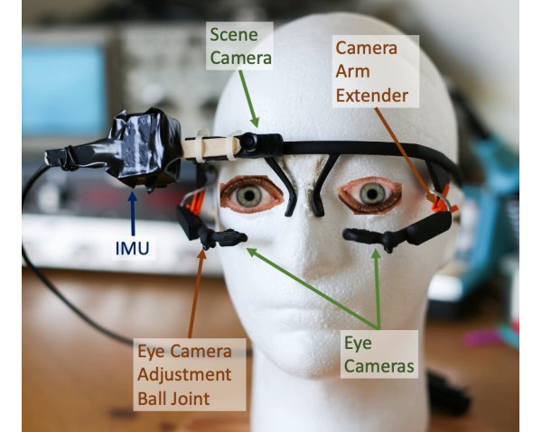
眼动用于解释管理者先看什么、如何比较证据；主要结论仍以任务表现和专家评价为依据。
创新落在可辨识的贡献上，难点转化为实验前的关键准备。
把分布式认知、共同基础与边界物件转化为 DCS，让跨角色信息保真与责任分摊成为可设计对象。
用信息损耗评价方法衡量信息在组织链中的衰减，并以内容编码、人机贡献区分与基线内比较避免循环论证。
以幕后人工转写保留原话；管理者先独立判断，再查看预先冻结的辅助信息；来源标注与过程记录支持追溯。
先完成不影响实验设计的基础工作，再进入正式实验与数据采集。
原型能够运行，不等于正式实验链路已经就绪。
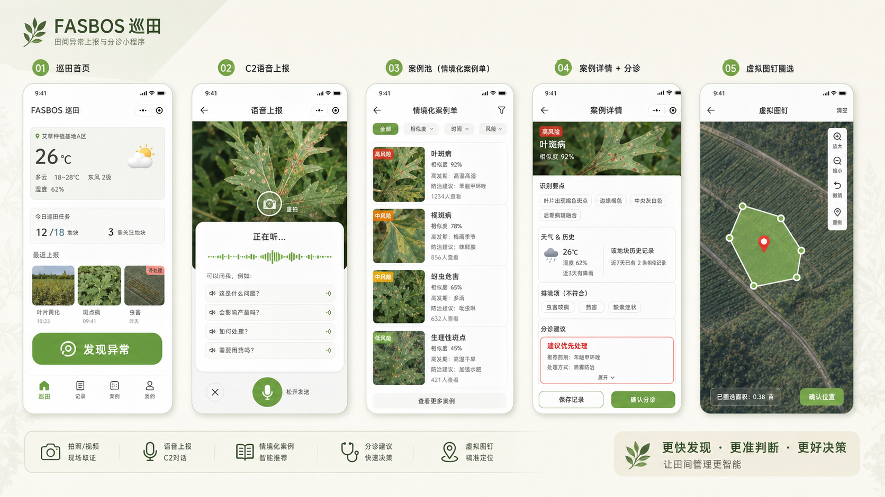
完善文献综述、研究问题与指标体系；完成田间异常材料整理和专家校核。
完善三种上报方式和桌面分诊端，通过小规模预实验修订任务与问卷。
开展观察者实验，比较不同引导方式对表达负担和信息保真的影响。
使用冻结上报开展管理者实验，采集决策表现、过程与眼动证据。
整合定量和质性结果，提炼设计原则，完成论文撰写与成果整理。
交付一套可追溯、可复用的研究方法，而不只是一个界面原型。
解释不同引导方式如何影响田间人员的表达负担、信息完整性，以及管理者后续判断。
提出面向“观察—上报—研判—处置”链路的信息支架框架和跨角色信息质量评价方法。
形成可演示的 FASBOS 原型、实验材料和设计建议，为道地药材种植协作提供参考。
FASBOS 不替代农业判断，而是让现场观察更完整地进入组织决策。
谢谢各位老师，请批评指正。
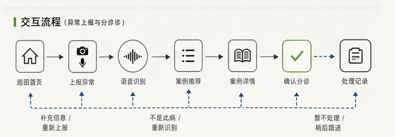